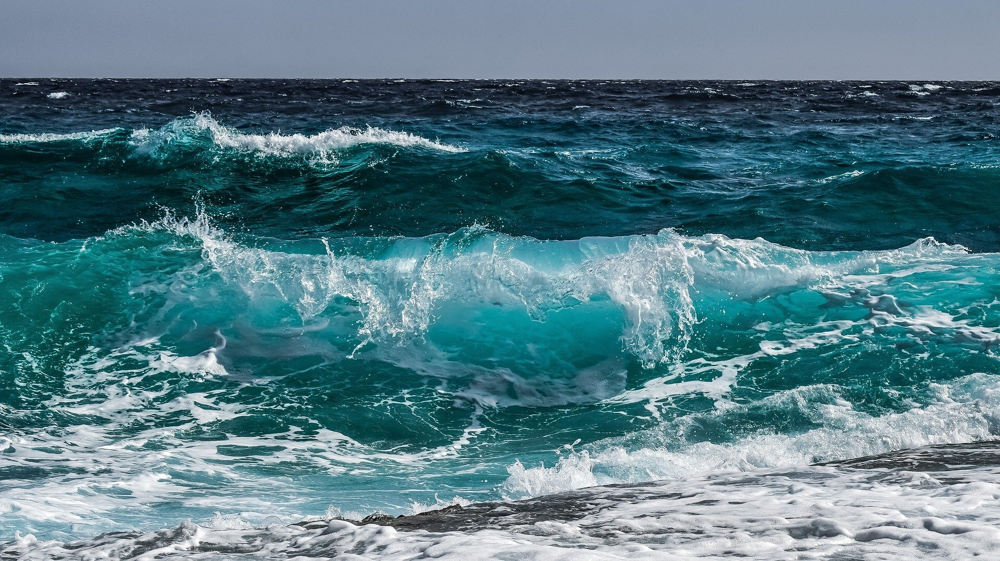

Quantifying the Economic Impacts of Sea Level Rise

Introduction
Anthropogenic climate change is an undeniable issue in today's society, altering Earth's landscape. One of these impacts is rising sea levels: as global warming causes Earth's oceans to expand, they may damage coastal infrastructure and force people to relocate, among other consequences. Previous predictions of sea level rise come from Earth System Models (ESMs), which are complex and computationally intensive. Consequently, they can model sea-level rise only for a limited number of emission scenarios, or Shared Socioeconomic Pathways (SSPs).
Our model aims to explore the full range of sea-level rise scenarios by emulating these ESMs, providing fast, efficient approximations. To do this, we processed the NorESM2-LM output data for sea-level rise and used the Building Blocks for Relevant Ice and Climate Knowledge (BRICK) model framework to develop a sea-level rise predictor. Moreover, limited studies reference the socioeconomic impacts of sea-level rise. Our study attempts to quantify the impacts of sea level rise on population and GDP. This model is an adaptation of the Python Coastal Impact and Adaptation Model (PYCIAM). Its input is predictions generated by the model using the BRICK framework, and its outputs are damage costs and population relocation due to sea-level rise.